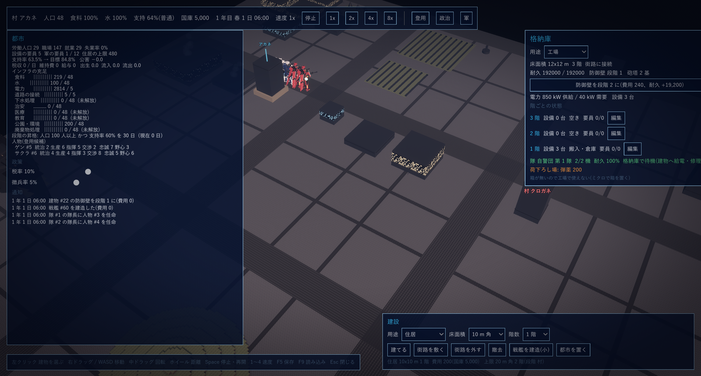
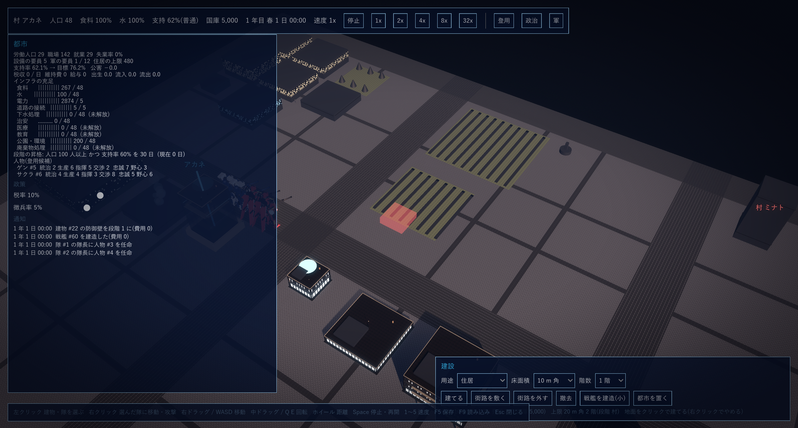
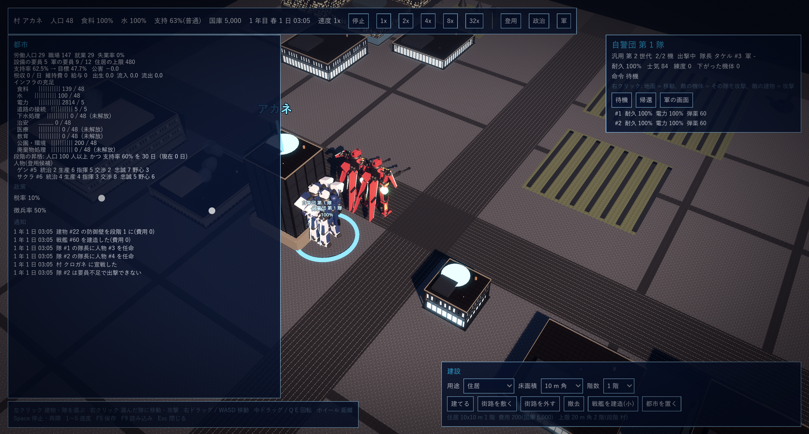
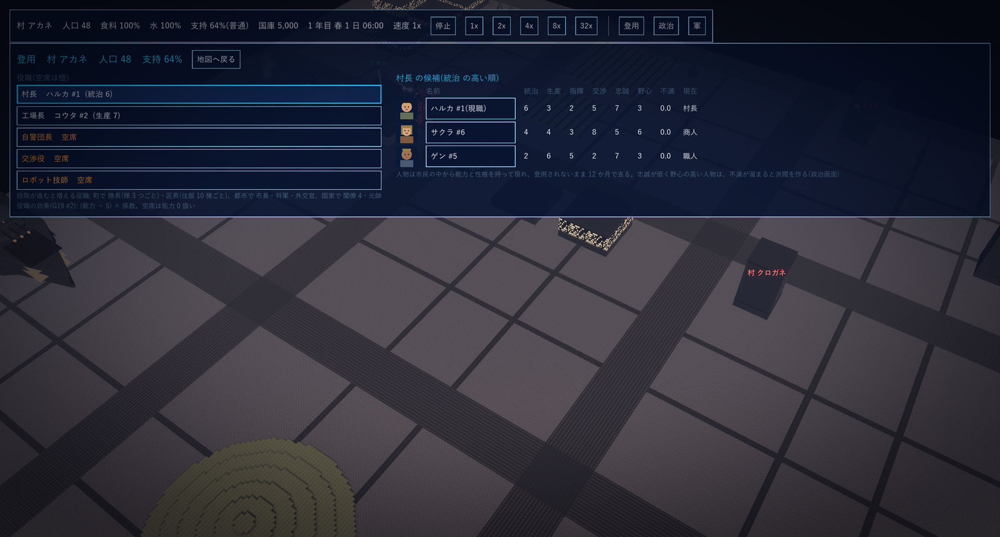
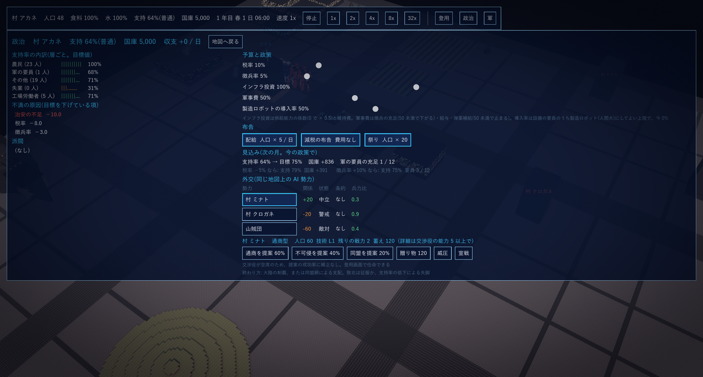
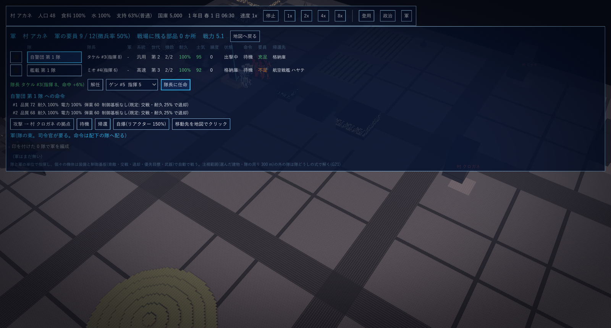

P1 起動と画面
GPS 試遊版の遊び方。設計の正典(設計指針.html)とは別に、遊ぶ人向けに操作と進め方だけを書く。2026-10-16 作成。
1. 起動
次のバッチを実行する。C# をビルドしてから Godot で都市の画面が開く(初回は 1 分ほど)。窓は最大化で開く。
E:\VSC_Git\GPS\遊ぶ.bat
2. 画面の見方

| 場所 | 内容 |
|---|---|
| 上の帯 | 段階と村の名前、人口、食料と水の充足、支持率(帯の名前)、国庫、日時、速度。速度のボタン(停止 / 1x / 2x / 4x / 8x / 32x)と、登用・政治・軍の画面を開くボタン |
| 左の板「都市」 | 雇用と要員、支持率と目標、税収と維持費、インフラの充足(「有る / 要る」。未解放は段階が上がると使える)、段階の昇格の条件、登用の候補。下に政策のスライダー(税率・徴兵率)と通知(出来事が新しいものから)。板が長いときは中でスクロールする |
| 右の板 | 選んだもの。建物なら用途・街路の接続・耐久と防御壁・供給と要員・工場なら階ごとの状態と「編集」・格納庫の隊。隊なら機数・耐久・士気・練度・命令と、命令のボタン |
| 右下「建設」 | 用途・床面積・階数を選んで「建てる」。街路を敷く / 外す、撤去、戦艦の建造、都市を置く |
| 下の帯 | 操作の一覧(P2) |
| 地図 | 建物、街路(暗い帯)、畑(縞)、丘、出撃中の機体(名札に隊の名前と耐久 %)。赤い名札は他の勢力の拠点や隊 |
時間は 1 日 = 現実の 2 時間(1x)。様子を見るときは 8x か 32x にする。何か起きると左の板の「通知」に出る。
P2 操作
1. 地図
| 操作 | 働き |
|---|---|
| 左クリック | 建物か隊を選ぶ(機体の近くをクリックするとその隊)。右の板に中身が出る |
| 右クリック | 自軍の隊を選んでいるとき、その隊に命令する。地面 = そこへ移動、敵の機体 = その隊を攻撃、敵の建物 = その建物を攻撃。格納庫にいる隊なら、出撃してその地点へ向かう |
| 右ドラッグ / W A S D / 矢印 | 視点の平行移動(地面をつかんで動かす) |
| 中ドラッグ / Q E | 視点の回転(中ドラッグは上下で仰角も) |
| ホイール | 距離(30〜900 m) |
| Space | 停止と再開(再開は直前の速度) |
| 1 2 3 4 5 | 速度 1x 2x 4x 8x 32x |
| F5 / F9 | 保存 / 読み込み(1 枠。読み込みは場面を作り直す) |
| Esc | 開いている画面を閉じる → 建設のモードをやめる → 選択を外す、の順 |
2. 建設
| 操作 | 働き |
|---|---|
| 建てる | 右下で用途・床面積・階数を選び「建てる」を押してから、地面をクリック。半透明の箱が下描きで、青なら建てられ、赤なら建てられない(街路に接していない、他の建物と重なる、国庫が足りない)。右クリックでやめる |
| 街路を敷く / 外す | 始点をクリック、終点をクリック(幅 4 m)。建物は街路に接していないと働かない |
| 撤去 | 建物をクリック(拠点・格納庫・他勢力の拠点は撤去できない) |
| 戦艦を建造(小) / 都市を置く | 国家の段階 / 都市の段階から。試遊版の見本の村では使えない |

建てるモード。畑の上に置こうとしているので下描きが赤い(建てられない)。
3. 画面(登用・政治・軍)
上の帯のボタンで開き、「地図へ戻る」か Esc で閉じる。開いている間も時間は進む(止めたいときは Space)。
P3 最初の 30 分
見本の村「アカネ」(人口 48、国庫 5,000)から始まる。周りに AI の勢力が 3 つ(村 ミナト = 通商型、村 クロガネ、山賊団)いる。
- 速度を上げる。 4 (8x) を押す。上の帯の日時が進み、左の板の支持率が目標へ寄っていく。支持率は人口の増減と段階の昇格に効く。
- 建物を見る。 格納庫(左上の、機体が前に並ぶ建物)をクリック。右の板に階ごとの状態と、隊「自警団 第 1 隊」が出る。
- 役職を埋める。 「登用」を開く。左の役職から空席(橙)を選び、右の候補の名前を押すと任命される。自警団長(指揮)・交渉役(交渉)・ロボット技師(生産)が空いている。人物は市民から現れ、登用されないまま 12 か月で去る。
- 住居と食料・水。 左の板の「住居の上限」が人口の上限。「建設」で住居(10 m 角 1 階、費用 200)を街路に接した空き地に建てる。食料・水の「要る」が増えてきたら畑と井戸を足す。
- 政治と予算。 「政治」を開く。税率を上げると国庫が増え支持率の目標が下がる。徴兵率は軍の要員(隊を出撃させるのに要る)。軍事費が 50 未満だと弾薬の補給が止まる。布告(配給・減税・祭り)は支持率を一時的に上げる。見込みの行に、今の政策で来月どうなるかが出る。
- 隊を出す。 「軍」を開く。隊に隊長がいないと出撃できない(候補から「隊長に任命」)。要員が「不足」なら左の板の徴兵率を上げる(試遊版の見本は 50% にしてある)。「出撃」を押すと格納庫の前に出る。
- 地図で動かす。 出撃した機体をクリックして隊を選び、地面を右クリックすると移動、敵の機体を右クリックすると攻撃。建物は避けて歩く。帰すときは右の板の「帰還」。
- 保存。 F5。読み込みは F9(閉じると消えるので、やめる前に F5)。

出撃中の隊を選んだところ。足元に輪が出て、右の板に隊の中身と命令のボタンが出る。
P4 村を育てる
1. 段階
| 段階 | 昇格の条件 | できるようになること |
|---|---|---|
| 村 | (開始) | 建物 20 m 角 2 階まで。役職は 村長・工場長・自警団長・交渉役・ロボット技師 |
| 町 | 人口 100 以上 かつ 支持率 60% 以上 を 30 日 | 建物 30 m 角 4 階。区長(住居 10 棟ごと)。下水処理などのインフラが解放。戦闘は注視している所だけ個機で解く |
| 都市 | 同様に人口と支持率の条件(左の板に出る) | 建物 50 m 角 8 階。新しい都市を置ける(住居・食料・水は都市ごと) |
| 国家 | 同様 | 建物 100 m 角 12 階。元帥。航空戦艦。食料・水・電力を国全体で融通 |
2. 支持率
層ごと(農民・軍の要員・工場労働者・失業・その他)に目標があり、全体の支持率がそこへ寄っていく。政治の画面の「不満の原因」に、目標を下げている項目(治安の不足、税率、徴兵率など)が出る。支持率の帯が「危険」「失脚の危機」まで下がると暴動(生産効率 70%)や反乱が起き、失脚の危機が続くと敗北。
3. インフラ
左の板の「インフラの充足」は 有る / 要る。食料は畑、水は井戸、電力は工場のリアクター、治安は警察、医療・教育・公園・下水・廃棄物はそれぞれの用途の建物。建物の用途は右の板の「用途」で変えられる。要員(働く人)が要る用途は、人口が足りないと働かない。
4. 国庫
税収(人口 × 税率)が日ごとに入り、維持費と給与が出る。建設と布告と贈り物と修復に使う。政治の画面の「見込み」で来月の増減が分かる。
P5 人物と政治

1. 登用
左が役職(空席は橙)、右がその役職に向く順に並んだ候補。能力は 統治・生産・指揮・交渉(1〜10)、性格は 忠誠・野心。役職の効果は (能力 − 5) × 係数 で、5 が普通、空席は 0 扱い。名前を押すと任命、「解任」で外す。人物は 1 人 1 役(役職・隊長・司令官のどれか 1 つ)。
| 役職 | 効く所 |
|---|---|
| 村長(町長・市長・国家元首) | 統治: 支持率 |
| 工場長(産業大臣) | 生産: 工場の効率 |
| 自警団長(隊長・将軍・軍事大臣) | 指揮: 隊の命中 |
| 交渉役(外交官・外務大臣) | 交渉: 外交の提案の成功率(交渉 5 以上で相手の詳細が見える) |
| ロボット技師 | 生産: 機体(格納庫に機体があるとき) |
| 区長(町から、住居 10 棟ごと)、元帥(国家) | 統治 / 指揮 |

2. 政治
| 項目 | 内容 |
|---|---|
| 支持率の内訳 | 層ごとの人数と目標値。「不満の原因」は目標を下げている項目 |
| 派閥 | 忠誠が低く野心の高い人物は、不満が溜まると派閥を作る。放っておくと反乱の種になる(解任か、不満の原因を減らす) |
| 予算と政策 | 税率(上限 50%)・徴兵率(上限 50%)・インフラ投資(供給能力の係数と維持費)・軍事費(徴兵の充足と給与・弾薬補給。50 未満で補給が止まる)・製造ロボットの導入率(設備の要員のうち製造ロボットにしてよい上限) |
| 布告 | 配給(30 日、人口 × 5 / 日)、減税の布告(30 日、支持 +5)、祭り(即時、人口 × 20、支持 +5) |
| 見込み | 今の政策での来月の支持率・国庫・要員。税率と徴兵率を変えたときの見込みも並ぶ |
| 外交 | P7 |
P6 軍と戦闘

1. 隊と軍
| 項目 | 内容 |
|---|---|
| 隊 | 同じ系統・同じ世代の機体 1〜12 機。見本の村には 自警団 第 1 隊(汎用 第 2 世代 2 機、格納庫)と 艦載 第 1 隊(高速 第 3 世代 2 機、航空戦艦 ハヤテ)がいる |
| 隊長 | 隊に 1 人。いないと出撃できない。指揮 1 点につき命中 ±2% |
| 軍 | 隊の束。軍の画面で隊に印を付けて「軍を編成」。司令官(指揮 1 点につき配下の全隊に ±1%)がいないと軍としての命令を受けない。軍には「出撃」「攻撃」「移動先を地図でクリック」「帰還」 |
| 要員 | 機体 1 機に人が要る。徴兵率 × 人口。「不足」の隊は出撃できない |
| 士気(0〜100) | 機体を失うと下がり、撃破すると上がる。格納庫で回復、出撃中に補給切れや隊長不在だと下がる。低いと命中が落ち、早く下がり、20 を割ると崩れて帰還する |
| 練度(0〜100) | 撃破と交戦した時間で上がる。命中が上がる |
2. 命令
| 命令 | 働き |
|---|---|
| 出撃 | 格納庫の前に出る(地図で右クリックした地点へ向かわせることもできる) |
| 移動 | 地図で右クリックした地点へ。建物は避けて歩く |
| 攻撃 → 隊 / 拠点 | 相手の隊を追って撃つ。建物なら射程の手前で止まって撃つ(壁と砲塔のある拠点は固い) |
| 待機 | その場で、射程に入った敵を撃つ |
| 部品を回収 | 戦場に落ちた部品(撃破された機体の 3 割)を拾って格納庫へ持ち帰る。修理に使う |
| 帰還 | 格納庫へ戻る。格納庫では建物の電力で充電し、荷下ろし場の部品で修理する(1 時間に 1 個、1 個で 25%) |
| 自爆 | リアクターを過負荷にして爆発(周りの敵味方に被害) |
3. 戦闘の仕組み(知っておくとよいこと)
- 撃たれて耐久が 25% を切った機体は勝手に下がって帰る(士気が低いともっと早く)。全機が下がると隊が帰還する。
- 建物の陰は射線が通らない。丘も同じ。高速の系統は距離があると飛んで越える(飛行中は当たりにくい)。
- 町以降は、選んでいる建物や隊の周り 300 m だけ 1 機ずつ細かく計算し、外は隊ごとのまとめた計算になる(見た目は代表機 1 体)。結果はほぼ同じ。
- 拠点(見本では格納庫)には防御壁と砲塔が付けられる(右の板)。砲塔は荷下ろし場の弾薬を使う。
- 機体は工場の階で作る。製造や制御基板(機体ごとの退却・交戦の判断)は工場の「編集」から(P8)。
P7 外交と戦争
1. 勢力
同じ地図に AI の勢力がいる(見本では 村 ミナト・村 クロガネ・山賊団)。政治の画面の「外交」に、関係(−100〜+100)・状態(友好 / 中立 / 警戒 / 敵対)・条約・兵力比が出る。交渉役の交渉が 5 以上だと相手の人口・技術・残りの戦力・蓄えが見える。
| 行動 | 内容 |
|---|---|
| 通商を提案 | 成功すると国庫の収入が増える。成功率は関係と交渉役の交渉で変わる(ボタンに %) |
| 不可侵 / 同盟を提案 | 攻められにくくなる / 一緒に戦う。同盟は関係が高くないと通らない |
| 贈り物 | 国庫から渡して関係を上げる |
| 威圧 | 兵力比が高いと相手が譲歩する。失敗すると関係が下がる |
| 宣戦 | 戦争になる。相手の襲撃隊が来るようになり、こちらから拠点を攻められる |
2. 申し出
相手からの申し出(通商・同盟・従属の要求・講和など)は通知に出て、政治の画面に「受ける / 断る」のボタンが出る。期限内に答えないと断ったことになる。
3. 戦争
- 相手の兵力が増えると「侵攻の恐れ」の通知が出る。襲撃隊が来たら、隊を出撃させて迎え撃つ(隊を選んで敵の機体を右クリック)。拠点が落ちると征服される(敗北)。
- 攻めるときは、隊か軍に「攻撃 → 相手の拠点」。拠点を落とすと相手は属国になり、スクラップがこちらの拠点の荷下ろし場に入る(右の板から工場の箱へ移せば工場で使える)。
- 負けが込むと相手から講和の申し出が来る。講和で都市の割譲が起きることがある。
4. 終わり方
勝ち: 全ての勢力を属国にする(制覇)か、属国でない全ての勢力と同盟を結ぶ(同盟網)。負け: 拠点が落ちる(征服)か、支持率が「失脚の危機」のまま一定の日数が過ぎる(失脚)。試遊版では通知が出るだけで、計算は続く。
P8 工場と機体

工場を選んで右の板の階の「編集」を押すと、その階の地図(ミクロ)に切り替わる。設備(機械・箱・リアクター・制御基板など)を置いたり外したりでき、「地図へ戻る」で都市の画面に戻る。試遊版では見本の工場に設備が置いてあるので、まずは眺めるだけでよい。
| 項目 | 内容 |
|---|---|
| 電力 | 右の板の「電力 供給 / 需要」。リアクターの出力が設備の需要を下回ると設備が止まる |
| 荷下ろし場 | 回収した部品や、落とした拠点のスクラップが入る。箱へ移すと工場で使える。砲塔の弾薬と機体の修理の部品もここから |
| 製造ロボット | 人間と同じ大きさの作業ロボット。設備の要員の代わりになる(政治の画面の導入率が上限)。戦闘ロボット(機体)とは別物 |
| 機体 | 世代(第 1〜6)と系統(汎用・重装・高速)と品質。制御基板を付けると、耐久や敵の数に応じた退却・交戦・自爆を機体が自分で判断する |
P9 保存と制約
1. 保存
F5 で保存、F9 で読み込み。枠は 1 つで、場所は次のとおり。
%APPDATA%\Godot\app_userdata\GPS\save1.json
2. 試遊版の制約
| 項目 | 状態 |
|---|---|
| 開始の場面 | 見本の村「アカネ」固定。地形や勢力の選択は無い |
| AI 勢力の工場 | 概算(侵攻して落とした際のスクラップは入る) |
| 戦艦の建造・都市を置く | 国家 / 都市の段階から。村では使えない |
| 終了 | 勝敗は通知だけで、計算は続く |
| 保存の枠 | 1 枠(F5 で上書き) |
3. 困ったとき
| 症状 | 見る所 |
|---|---|
| 隊が出撃できない | 軍の画面: 隊長がいるか、要員が「充足」か(徴兵率を上げる) |
| 建てられない | 下描きが赤: 街路に接していない、重なっている、国庫が足りない。通知に理由が出る |
| 建物が働かない | 右の板: 「街路に接していない」なら街路を敷く。要員が足りないなら人口を増やす |
| 支持率が下がり続ける | 政治の画面の「不満の原因」。治安(警察)、税率、徴兵率が多い |
| 何も起きない | 速度を 8x か 32x に。1 日は 1x で現実の 2 時間 |
| 落ちた・おかしい | ログ: %APPDATA%\Godot\app_userdata\GPS\logs |